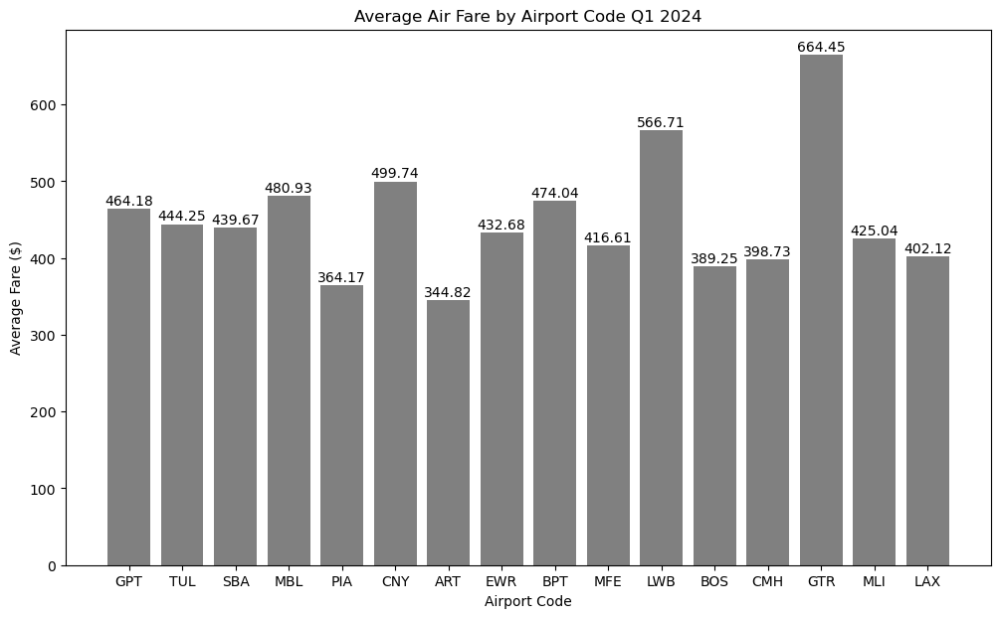
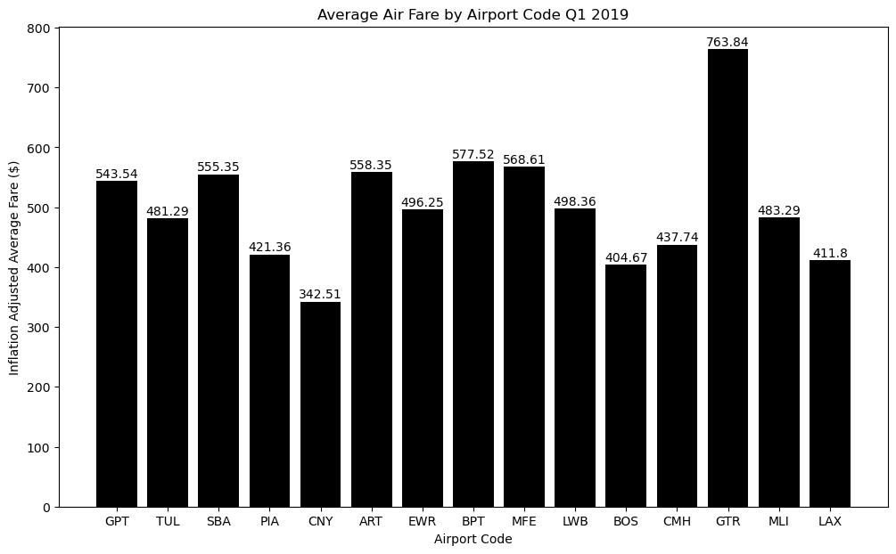
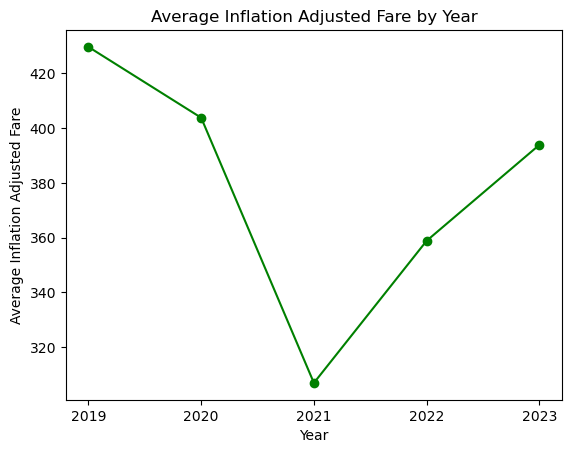
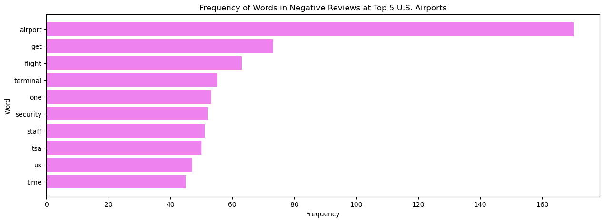
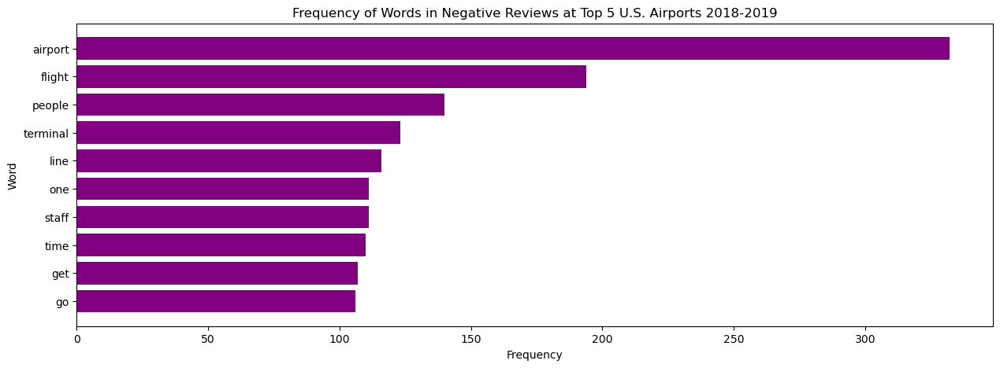

Welcome to the notebook containing the final project for DGT HUM 140 Summer 2024. I’ve always been fond of traveling and find the airport to be an intriguing place. It’s the atmosphere you feel when you walk into the security checkpoint; the excitement of going to a new city, or a new country. It is also a hub of intersecting backgrounds, and a status symbol of a city’s global prowress. That is why I’ve decided to focus my project on a question related to air travel and/or airports.
Research Question
A question often proposed by a lot of people I’ve come across in internet forums is whether air fare prices are increasing at an unaffordable rate. As I’ve browsed the web I’ve come across a lot of debate on whether rising air fares is a problem that is causing many people to refrain from traveling. I’ve heard people argue that air travel is not the same as it was before the pandemic. Thus, I want to investigate whether this is a shared sentiment and whether air travel as drastically changed after the pandemic by looking at data and analyzing whether air travel has changed socially, economically, or both. Specifically, I want to ask: > How has the experience of air travel changed for a passenger in the U.S. since the COVID-19 pandemic?
To answer the question, I will explore various datasets related to air travel and airports and their cities. These datasets will be mainly from the Bureau of Transportation Statistics. The first section of the notebook explores the datasets and creates motivation for further analysis. I will focus mainly on air travel from 2019 to early 2024 with 2019 representing before the pandemic. The links to the datasets will be provided when the datasets are referenced.
Before we start, we must first define “experience”. For this project, I will define experience as how “easy” it is for a passenger to be traveling through air, whether its affordability, accessibility, or availability. On that note, the hypothesis to the above question is that air travel experience has declinced after the pandemic, with flights being more unaffordable, and airlines slacking in performance due to the reset period that is the pandemic.
Air Travel Costs
Firstly, I would like to investigate how air travel costs have evolved the last few years. This gives us perspective on just how much air travel costs has actually changed. I will attempt to fetch the air fare history from the Bureau of Transportation Statistics (BTS) from 2019 to 2023. I will be using the average air fare data from the following link: >Average Air Fare (BTS)
import requestsfrom bs4 import BeautifulSoupimport pandas as pdimport matplotlib.pyplot as pltdef toDF(response): # for reusability# function uses BeautifulSoup to convert html to dataframe soup = BeautifulSoup(response.content, 'html.parser') table = soup.find('table', {'class': 'dataTD3'}) headers = [header.text for header in table.find_all('th')] rows = table.find_all('tr') data = []for row in rows: cols = row.find_all('td')iflen(cols) >0: cols = [col.text.strip() for col in cols] data.append(cols)return pd.DataFrame(data, columns=headers)url ='https://www.transtats.bts.gov/AverageFare/'response = requests.get(url)df = toDF(response)df = df.drop(df.index[-1]) # drop row with average as its not neededtarget = df.columns[-1] # last column is what we want# the below converts the data to numeric allowing it be plotted correctlydf[target] = pd.to_numeric(df[target], errors='coerce')df = df.dropna(subset=[target])# randomly sample and then add LAX to the samplerandom_sample = df.sample(n=15, random_state=1)if'LAX'notin random_sample['Airport Code'].values: lax = df[df['Airport Code'] =='LAX'] random_sample = pd.concat([random_sample, lax])# plot the bar graphplt.figure(figsize=(12, 7))bars = plt.bar(random_sample['Airport Code'], random_sample[target], color='gray')for bar in bars: yval = bar.get_height() plt.text(bar.get_x() + bar.get_width()/2, yval +1, round(yval, 2), ha='center', va='bottom')plt.xlabel('Airport Code')plt.ylabel('Average Fare ($)')plt.title('Average Air Fare by Airport Code Q1 2024')plt.show()

We can see that there is quite a variation in average airport fares across the United States. This makes sense as some airports are much more popular than other airports and the more popular ones are more likely to have the means to retain lower air fares. These numbers reflect also the up to date inflation for the US dollar. Not much can be concluded from this graph other than for exploration purposes. Thus, for comparison, let’s see what these same airports’ fares looked like in Q1 2019.
url ="https://www.transtats.bts.gov/AverageFare/"pd.options.mode.copy_on_write =Trueresponse = requests.get(url)response_text = response.text# retrieve formdata from request's responsesoup = BeautifulSoup(response_text, 'html.parser')viewstate = soup.find('input', {'name': '__VIEWSTATE'})['value']eventvalidation = soup.find('input', {'name': '__EVENTVALIDATION'})['value']# fill in POST required form datadata = {'__VIEWSTATE': viewstate,'__EVENTVALIDATION': eventvalidation,'dlstQuarter': '1','dlstYear': '2019'}# send POST request to get back response htmlresponse = requests.post(url, data=data)if response.status_code !=200:print(f"Request failed with status code {response.status_code}")df = toDF(response)df = df.drop(df.index[-1])target = df.columns[-1]df.head()df[target] = pd.to_numeric(df[target], errors='coerce')airport_codes = random_sample['Airport Code']# mirror the airports of the other graph but for 2019nineteen = df[df['Airport Code'].isin(airport_codes)]nineteen['Airport Code'] = pd.Categorical(nineteen['Airport Code'], categories=airport_codes, ordered=True)nineteen = nineteen.sort_values('Airport Code')plt.figure(figsize=(12, 7))bars = plt.bar(nineteen['Airport Code'], nineteen[target], color='black')for bar in bars: yval = bar.get_height() plt.text(bar.get_x() + bar.get_width()/2, yval +1, round(yval, 2), ha='center', va='bottom')plt.xlabel('Airport Code')plt.ylabel('Inflation Adjusted Average Fare ($)')plt.title('Average Air Fare by Airport Code Q1 2019')plt.show()

Surprisingly, after adjusting for inflation (by using the inflation adjusted column of the dataset) it seems that air fare tickets are actually less expensive today than it was in 2019! So contrary to negative sentiments you may see around the internet about air travel prices in the United States, it seems it is more affordable today to travel then it was in 2019. This means that the average passenger can afford to fly more often and farther, which in turn suggests the air travel experience is better now than it was pre-pandemic in regards to affordability and accessibility. This contradicts my hypothesis that air travel has significantly increased in price.
Now let’s broaden the data, and take a look at how air travel fares have evolved from 2019 to 2024, comparing the fares annually from 2019 to 2023, excluding 2024 since 2024 has not yet ended. This should tell us a trend in air fares, which may hint to how the flying experience is changing for the average passenger. To do this, we must fetch tables for 2019 until 2023, and make a line plot showing the change of the values from each year onto the next. We will take the national average values found from each table to do so.
results = []for year inrange(2019,2024): data['dlstYear'] =str(year) response = requests.post(url, data=data)if response.status_code ==200: year_df = toDF(response) nat_avg = year_df.iloc[-1, 2] # only obtain the national average fare results.append({'Year': year, 'Average Inflation Adjusted Fare ($)': nat_avg})final_df = pd.DataFrame(results)final_df['Average Inflation Adjusted Fare ($)'] = pd.to_numeric(final_df['Average Inflation Adjusted Fare ($)'], errors='coerce')plt.xticks(final_df['Year'], [str(int(year)) for year in final_df['Year']])plt.xlabel('Year')plt.ylabel('Average Inflation Adjusted Fare')plt.title('Average Inflation Adjusted Fare by Year')plt.plot(final_df['Year'],final_df['Average Inflation Adjusted Fare ($)'], color='green', marker='o')

As can be seen in the graph above, the trend of air fare prices mirrors the events of the pandemic, as right after the pandemic started, there was little to no air traffic, hence the very low national average air fares in 2021. After 2021 the air fare prices have picked up and are on an upwards trend, yet it remains below the 2019 national average. This shows that the air travel experience has remained relatively the same over the past few years, but because average prices were so much lower in 2022 when the pandemic was starting to recede, people may have associated the rapidly increasing prices thereafter as a sign of a degenerating air travel experience.
Overall, this trend explains why some passengers are complaining about the rapid raise in airline prices over the last few years. The perceived affordability of these flights are suffering from the trend’s recovery from a steep drop due to an unexpected world impacting circumstance. The trend suggests that flight prices will rise back up to the 2019 average over a few more years and may either plateau or keep trending upwards. More analysis and data is required to make a more substantial claim.
Airline Performance
Now that we know that air fares have not become more unaffordable, let’s look at whether airlines are performing at their usual or worse after the pandemic, which will let us know if the passenger experience is ultimately impacted by the pandemic’s reset on air activity. The below article by Forbes describes the loss of thousands of workers in the air travel field due to the pandemic’s shutdown of air activity. This may contribute to a new era of airline service that could be better or worse than before the pandemic. > Airlines Lost Over 400,00 Workers
We will look at data of airline’s percentage of on-time flights from Marketing 2019 to Operating 2023 (terms used to divide operating periods). We will look at the trend of average on-time performance of U.S. aircrafts.
The above graph shows the change in on-time performance through operating periods, and is the national average of all airlines’ performances. We can see that there was a period of great fluctuation between Operating 2019 and Marketing 2022, where the performance went up and then back down, dipping below Marketing 2019. We can see that Operating 2023 has a lower on-time performance than Operating 2019, suggesting that overall, airline performance has decreased in terms of on-time performance. However, the decrease does not seem large enough to be significant or alarming. Again, this supports the fact that airline performance has not really changed nowadays as compared to 2019, before the pandemic. This is presumably due to the fact that much of the world has recovered from the impacts of the pandemic to air travel.
it is revealed that there were record number of complaints in 2023 regarding air travel, totaling at a massive 96,853 submissions. I was unable to analyze the consumer reports due to the lack of feasibility as the reports are only given in pdf form, but I was still able to read the reports myself and for 2019, the complaints received totaled around 15,332. This large jump in the number of complaints suggests that there may be a rise in negative sentiments associated with air travel and airline service. This large jump may also suggest that there is a cultural movement for passengers to start airing their grievances on airline service and discrimination more frequently. Nonetheless, it reveals that despite prices staying relatively similar to pre-pandemic, there may be a great drop in quality of airline service and airport service in order to warrant such increases in complaints. Alternatively, there may be a new change in air travel in the U.S. that have sparked these complaints.
Passenger Experience
Unfortunately I was unable to access the complaints data inside the consumer report. Something great to make would be frequency analysis to reveal the top common problems raised by consumers, by keeping track of the frequency of negative words. Since I was unable to use Python to properly analyze the consumer reports, I decided to go on an airline/airport review website powered by Skytrax to extract negative reviews. >Airline Equality
The website allows consumers to leave reviews on airlines and airports. This should give us something to use sentiment analysis on and retrieve the most frequent complaints passengers had in 2023-2024 and from 2018-2019 (before pandemic). Let’s go with LAX as our airport, as LAX is a fairly large airport in the U.S. and the airport is located in a very diverse city. We will get all 2023-2024 reviews on LAX from the website’s review pages. We will use SentimentIntensityAnalyzer to determine which words are negatively associated and then count the frequencies of said words to see if we can find a pattern. Through analysis (full work shown in notebook) the graph was found to not be interesting enough, and thus it is better to jump straight to the final product: redo the sentiment analysis to pick up words from negative reviews.
import nltkfrom nltk.corpus import stopwordsfrom nltk.tokenize import word_tokenizefrom nltk.sentiment.vader import SentimentIntensityAnalyzerfrom collections import Counternltk.download('vader_lexicon')nltk.download('stopwords')nltk.download('punkt')# scrapes page for the elements containing the reviewsdef scrape(airport, page): url =f"https://www.airlinequality.com/airport-reviews/{airport}/page/{page}/" response = requests.get(url) soup = BeautifulSoup(response.text, 'html.parser') reviews = soup.find_all('div', class_='text_content') dates = soup.find_all('time')return [(review.get_text(strip=True), date.get_text(strip=True)) for review, date inzip(reviews, dates)]
[nltk_data] Downloading package vader_lexicon to
[nltk_data] C:\Users\kevin\AppData\Roaming\nltk_data...
[nltk_data] Package vader_lexicon is already up-to-date!
[nltk_data] Downloading package stopwords to
[nltk_data] C:\Users\kevin\AppData\Roaming\nltk_data...
[nltk_data] Package stopwords is already up-to-date!
[nltk_data] Downloading package punkt to
[nltk_data] C:\Users\kevin\AppData\Roaming\nltk_data...
[nltk_data] Package punkt is already up-to-date!
# instead of counting negative words# count all words in negative reviewsdef scrapeV3(airport): reviews = [] page =1 sid = SentimentIntensityAnalyzer()whileTrue: data = scrape(airport, page)ifnot data:breakfor review, date in data:if'2023'notin date and'2024'notin date:return reviews sentiment_score = sid.polarity_scores(review)['compound']if sentiment_score <0: reviews.append(review) page +=1return reviewsairports = ['los-angeles-lax-airport', 'dallas-fort-worth-airport', 'atlanta-hartsfield-airport', 'denver-airport', 'chicago-ohare-airport']all_reviews = []for airport in airports: reviews = scrapeV3(airport) all_reviews.extend(reviews)text =' '.join(all_reviews)stop_words = stopwords.words('english')text = text.lower()tokens = [i for i in nltk.word_tokenize(text) if i.isalpha() and i notin stop_words]freq = Counter(tokens)top_words = freq.most_common(10)words, freqs =zip(*top_words)plt.figure(figsize=(15, 5))plt.barh(words, freqs, color='violet')plt.xlabel('Frequency')plt.ylabel('Word')plt.title('Frequency of Words in Negative Reviews at Top 5 U.S. Airports 2023-2024')plt.gca().invert_yaxis()plt.show()

From the above graph, we can see that the top words used in negative reviews that can inform us are the words security, tsa, and staff. These are all words relating to the customer service of the airports in the U.S. and correlate with the high frequency of the word rude in the previous graphs. Before we do more analyzation, let’s compare this graph with the words from 2018-2019, pre-pandemic.
def scrapeV4(airport): reviews = [] page =1 sid = SentimentIntensityAnalyzer()whileTrue: data = scrape(airport, page)ifnot data:breakfor review, date in data:ifany(year in date for year in ['2024','2023','2022','2021','2020']):continueif'2019'notin date and'2018'notin date:return reviews sentiment_score = sid.polarity_scores(review)['compound']if sentiment_score <0: reviews.append(review) page +=1return reviewsairports = ['los-angeles-lax-airport', 'dallas-fort-worth-airport', 'atlanta-hartsfield-airport', 'denver-airport', 'chicago-ohare-airport']all_reviews = []for airport in airports: reviews = scrapeV4(airport) all_reviews.extend(reviews)text =' '.join(all_reviews)stop_words = stopwords.words('english')text = text.lower()tokens = [i for i in nltk.word_tokenize(text) if i.isalpha() and i notin stop_words]freq = Counter(tokens)top_words = freq.most_common(10)words, freqs =zip(*top_words)plt.figure(figsize=(15, 5))plt.barh(words, freqs, color='purple')plt.xlabel('Frequency')plt.ylabel('Word')plt.title('Frequency of Words in Negative Reviews at Top 5 U.S. Airports 2018-2019')plt.gca().invert_yaxis()plt.show()

We can see in the above graphs that security and tsa are not mentioned as much in the reviews for 2018-2019. This suggests that security and tsa complaints are a recent problem in air travel. This may indicate that rudeness became more prominent as a complaint after the pandemic.
Changes like these signal the ever evolving state of technology in the world and how that may impact security at major hubs like airports, train stations, and other public spaces. This more strenuous TSA may make some people feel that air travel is becoming more burdensome. It may also be an indicator of rising air fares to account for the increased responsibilities. This signals a decline in TSA responsibilities and may be why so many complaints in 2023-2024 are focused around TSA and security. TSA should give off a sense of security and responsbility, but it is not reciprocated by a lot of the events that have happened with TSA. Another Google search lands lots of other articles on passenger complaints of TSA. When passengers start to lose trust in security systems in place to prevent destructive acts like terrorism, air travel becomes a lot more dangerous. The continuing lack of accountability on TSA’s part is changing how passengers percieve security at airports, and this may open up loopholes for malicious activity. This also changes how passengers percieve airports, which may negatively impact their air travel experience.
Conclusion
The use of web scraping and plotting through Python has allowed us to examine changes in passenger experience before the pandemic and after the pandemic. What we found was that even though air fares and airline performances have remained relatively the same as it was pre-pandemic, passenger sentiments towards airport services and security have declined. Thus, in terms of experience, though affordability and availibility are still much the same, it seems accessibility of air travel has declined. This decline is illustrated by passengers’ lack of security and trust in the country’s airport security system. Instead of associating security checkpoints and procedures as a safety responsibility, passengers are associating security checkpoints with negative terms like “rude”. When passengers no longer see security as a responsibility to uphold, it allows for malicious intentions to find their way into airports. In light of this, airports should implement procedures to ensure that passengers have trust and good experiences with airport security.